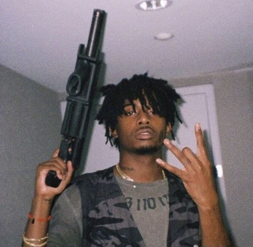

Programista LUA & Pasjonat MTA:SA
Siemano! Jestem DyZli. Moja przygoda z gamingiem i programowaniem mocno zakorzeniła się w świecie Multi Theft Auto. Przez lata przeszedłem drogę od gracza, przez właściciela serwerów, aż po developera LUA.
Dołączenie do MTA:SA
Pierwszy serwer MTA:SA
Poznanie fajnych znajomych
Nauka LUA
Dobre znanie się na języku LUA
Projekt distansMTA
Zakończenie projektu
Powolne odchodzenie & skrypty dla znajomych